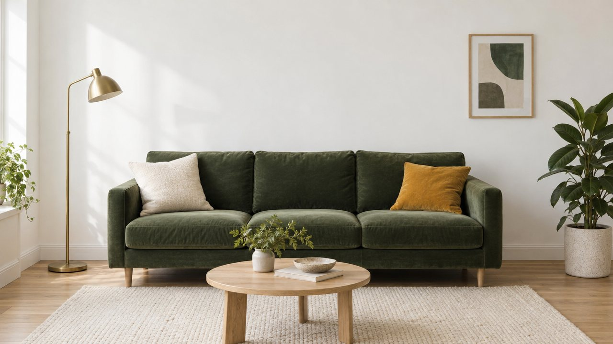

Cremeweiß
ungefähr #F1E9DALässt dem Sofa die Bühne. Die Creme passt besser zu Grün als ein kühles Weiß.
Auf dieser Seite
Planer
Ratgeber
Nachschlagen
So arbeiten wir · Impressum · Datenschutz · Schwesterseite: Strom-Daheim
Vier Farben, die passen, und eine, die du besser lässt. Im Beispielzimmer kannst du sie umschalten.
Ein grünes Sofa ist der Hingucker, die Wand hält sich zurück: Cremeweiß und Sand gehen immer. Altrosa ist der sanfte Gegenpol, Tannengrün die mutige Lösung Ton in Ton. Knallrot und Türkis beißen sich mit dem Sofa.

CremeweißLässt dem Sofa die Bühne. Die Creme passt besser zu Grün als ein kühles Weiß.
Das Bild zeigt die Richtung, nicht den genauen Ton. Farben sehen auf jedem Bildschirm etwas anders aus als an der Wand.
Lässt dem Sofa die Bühne. Die Creme passt besser zu Grün als ein kühles Weiß.
Grün und Sand wirken wie Wiese und Weg. Sehr ruhig.
Rot steht Grün im Farbkreis gegenüber. Als gedecktes Rosa wird daraus ein weicher Kontrast.
Wand und Sofa in Grün, die Wand etwas dunkler. Das wirkt wie ein Zimmer aus einem Guss.
Kräftiges Rot, Türkis und kaltes Blaugrün. Rot und Grün in voller Stärke flimmern nebeneinander, Türkis ist dem Sofa zu ähnlich und doch daneben.
Nach der 60-30-10-Regel bekommt die Wandfarbe etwa 60 Prozent des Raums, die zweite Farbe 30 Prozent und ein Akzent 10 Prozent.
Samtgrün wirkt je nach Lichteinfall heller oder dunkler. Prüfe das Muster neben dem Sofa, nicht an der gegenüberliegenden Wand.
Streiche ein Stück Karton in der Größe eines Blatts Papier und halte es an zwei Wände. Schau morgens, mittags und abends bei Lampenlicht darauf. Wie das genau geht, steht unter Vor dem Streichen testen.
Kleine Probierdosen gibt es für wenige Euro: Probierfarben bei Amazon suchen Anzeige
Passend zum Raum: Sofas in Grün bei OTTO · Wohnzimmer-Teppiche bei teppich.de · Stehlampen bei LampenweltAnzeige
Rosa, Senf, Creme und ein dunkleres Grün. Zwei Farben reichen.
Ein warmes Hellgrau ja. Ein kühles Grau nimmt dem Grün die Frische.
Alle 24 KombinationenDiesen Raum im Studio öffnenFarbpalette aus deinem ZimmerfotoWandfarbe wählen und kombinieren
Die Empfehlungen folgen den Regeln aus unserem Ratgeber Wandfarbe wählen: Farbkreis, 60-30-10-Regel und Lichtrichtung. Die Quellen stehen dort. Die Farbwerte sind Näherungen.